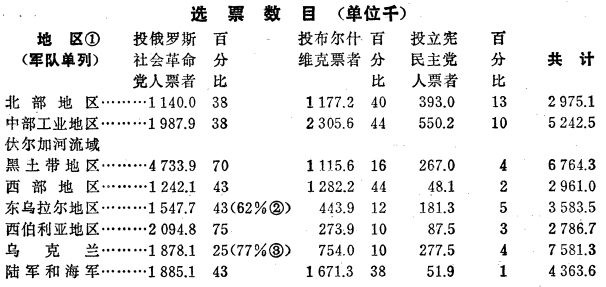

立宪会议选举和无产阶级专政（1919年12月16日）
立宪会议选举和无产阶级专政
（1919年12月16日）
社会革命党人1出版的文集《俄国革命的一年（1917―1918年）》（1918年莫斯科土地和自由出版社莫斯科版）里，载有尼·瓦·斯维亚季茨基的一篇饶有趣味的文章：《全俄立宪会议选举的结果（序言）》。总共79个选区，作者列举了其中54个选区的数字。
作者考察的范围差不多包括俄国欧洲部分和西伯利亚各省。没有包括的省份有：奥洛涅茨、爱斯兰、卡卢加、比萨拉比亚、波多利斯克、奥伦堡、雅库特和顿河区。
我们先引证尼·瓦·斯维亚季茨基所发表的主要结果，然后再来研究从这些材料中得出的政治结论。
一
54个选区在1917年11月份投票的总数是36262560票。作者按7个地区（外加陆军和海军）开列的选票总数是36257960票，但是，他开列的各党派的得票数，加起来就同我所指出的正好一致。
各党派得票情况如下：俄罗斯社会革命党人得1650万票，如果加上其他各民族（乌克兰、穆斯林以及其他民族）的社会革命党人所得的票数，则为2090万票，即占总票数的58％。
孟什维克得668064票，如果加上与它相类似的各个集团如“人民社会党人”2（312000票）、“统一派”3（25000票），合作社派4（51000票）、乌克兰社会民主党人（95000票）、乌克兰社会党人（507000票），德意志社会党人（44000票）和芬兰社会党人（14000票）所得的票数，那么总共是170万票。
布尔什维克得9023963票。
立宪民主党人5得1856639票。如果加上“土地所有者和占有者联盟”（215000票）、“右派集团”（292000票）、旧教徒6（73000票）和各种民族主义者，即犹太民族主义者（55万票）、穆斯林民族主义者（576000票）、巴什基尔民族主义者（195000票）、拉脱维亚民族主义者（67000票）、波兰民族主义者（155000票）、哥萨克民族主义者（79000票）、德意志民族主义者（13万票）、白俄罗斯民族主义者（12000票），以及“各种团体和组织”（418000票）所得的票数，那么各地主和资产阶级党派所得的选票总共是460万票。
大家知道，从1917年2月至10月的整个革命时期内，社会革命党人和孟什维克始终是结成联盟的。此外，无论这个时期或这以后事态的整个发展都清楚地证明：这两个党共同代表小资产阶级民主派，他们也和第二国际所有的党一样毫无自知之明，竟自称为社会主义政党。
我们把参加立宪会议选举的三大类党派合起来计算，便得出如下结果：
无产阶级的政党（布尔什维克）……………………………………………… 902万=25%
小资产阶级民主派的政党（社会革命党人、孟什维克及其他）……………2 262万=62％
地主和资产阶级的政党（立宪民主党人及其他）…………………………… 462万=13％
共 计……………………………………3 626万=100%
|
现在我们把尼·瓦·斯维亚季茨基按地区计算的数字列举如下：

(1)
(2)
(3)
从这些按地区计算的数字中可以看出，在立宪会议选举时，布尔什维克是无产阶级的政党，社会革命党是农民的政党。在纯农业地区即大俄罗斯的纯农业地区（伏尔加河流域黑土带地区、西伯利亚地区、东乌拉尔地区）和乌克兰的纯农业地区，社会革命党人得了选票的62―77％。在各工业中心，布尔什维克比社会革命党人占优势。这种优势在尼·瓦·斯维亚季茨基列举的那些按区域计算的数字中是被过于缩小了，因为他把工业最发达的区域和工业不发达的以及非工业的区域合在一起了。例如，斯维亚季茨基按省列举的社会革命党、布尔什维克党、立宪民主党以及“各民族集团和其他集团”所得的票数，说明如下情况：
布尔什维克在北部地区所占的优势似乎微不足道：40％对38％。但是，这个地区既包括非工业区，又包括工业区，在非工业区（阿尔汉格尔斯克省、沃洛格达省、诺夫哥罗德省、普斯科夫省）社会革命党人占优势，而在工业区的情形是：首都彼得格勒，布尔什维克得45％（选票），社会革命党人得16％；彼得格勒省，布尔什维克得50％，社会革命党人得26％；里夫兰省，布尔什维克得72％，社会革命党人零票。
在中部工业地区各省：莫斯科省，布尔什维克得56％选票，社会革命党人得25％；莫斯科首都区，布尔什维克得50％，社会革命党人得8％；特维尔省，布尔什维克得54％，社会革命党人得39％；弗拉基米尔省，布尔什维克得56％，社会革命党人得32％。
顺便指出，关于布尔什维克过去和现在都只得到无产阶级“少数人”的拥护的说法，在这些事实面前该是多么可笑啊！而这种说法，我们无论是从孟什维克（668000票，再加上外高加索的70―80万票，对布尔什维克的900万票）或第二国际社会主义叛徒们那里，都可以听到。
二
获得总票数四分之一的布尔什维克胜利了，同资产阶级结成联盟（联合）并同它一起共获得总票数四分之三的小资产阶级民主派却失败了，怎么会发生这种怪事呢？
因为现在，在协约国7——称霸世界的协约国——帮助了布尔什维主义的一切敌人两年之后，再要否认布尔什维克胜利的事实，那简直太可笑了。
现在的情况是，那些遭到失败的人们，包括第二国际的所有拥护者，由于怀有疯狂的政治仇恨，甚至不能严肃地提出布尔什维克为什么会胜利这个极有意味的历史的政治的问题。现在的情况是，只有从庸俗的小资产阶级民主派的观点来看，这才是“怪事”，而上面这一问题的提出以及对这一问题的回答将彻底揭穿这种民主派的无知和偏见。
从阶级斗争和社会主义的观点，从被第二国际抛弃了的这个观点来看，这个问题无疑是可以得到解答的。
布尔什维克所以获得了胜利，首先是由于他们得到了无产阶级大多数人的拥护，其中包括无产阶级最有觉悟、最坚决、最革命的部分即这个先进阶级的真正先锋队的拥护。
我们拿两个首都彼得格勒和莫斯科来看。在这两个地方，选举立宪会议时总共投了1765100票。其中：
社会革命党人……………………218000票
布尔什维克………………………837000票
立宪民主党人……………………5154000票
|
尽管那些自称为社会党人和社会民主党人（切尔诺夫分子、马尔托夫分子、考茨基分子，龙格分子、麦克唐纳分子等等之流）的小资产阶级民主派，在“平等”、“普选”、“民主”、“纯粹民主”或“彻底民主”这些女神面前磕得头破血流，城市和农村在经济上和政治上不平等这一事实并未因此而消失。
这是在整个资本主义时代，特别是在从资本主义向共产主义过渡的时代不可避免的事实。
城市不可能和农村平等。在这个时代的历史条件下，农村也不可能和城市平等。城市必然要带领农村。农村必然要跟城市走。问题仅仅在于，“城市”阶级中的哪个阶级能够带领农村，能够担当这个任务，以及城市对农村的领导采取什么形式。
1917年11月布尔什维克得到了无产阶级极大多数人的拥护。同布尔什维克在无产阶级中竞争的党——孟什维克党，这时已被击溃（布尔什维克以900万票对孟什维克的140万票，140万票是把668000票和外高加索的70―80万票加在一起而得的数目）。而且这个党是经过15年的斗争（1903―1917年）才被击溃的，这一斗争锻炼、教育并组织了无产阶级的先锋队，把它锤炼成了真正的革命先锋队。同时，1905年的第一次革命还为进一步的发展作好了准备，在实践中决定了两党的相互关系，对1917―1919年的伟大事变起了总演习的作用。
自称为第二国际“社会党人”的小资产阶级民主派，喜欢用什么无产阶级“统一”有好处这类甜言蜜语来回避极其严肃的历史问题。他们搬弄这些甜言蜜语时，却忘记了机会主义在1871―1914年工人运动中逐渐滋长起来这一历史事实，忘记了（或者是不愿意）考虑一下机会主义在1914年8月破产的原因，国际社会主义运动在1914―1917年发生分裂的原因。
要是无产阶级的革命部分没有在各方面极认真地作好驱逐和压倒机会主义的准备，那么连建立无产阶级专政的想法也是荒唐的。那些现在想以口头上承认无产阶级专政来摆脱困境的德国“独立”社会民主党8、法国社会党9等等的领袖们，必须牢牢记住俄国革命的这个教训。
其次，布尔什维克不仅有无产阶级大多数人的拥护，不仅有在反对机会主义的顽强的长期斗争中经过锻炼的无产阶级革命先锋队的拥护，而且在两个首都还有——如用军事术语来说——强大的“突击部队”。
在决定性时机和决定性地点在力量上占压倒优势，这个取得军事胜利的“规律”也是取得政治胜利的规律，特别是在残酷的、激烈的、称为革命的阶级战争中取得政治胜利的规律。
首都或大工商业中心（这两个概念在我们俄国是一致的，但并非在任何时候都是一致的）在很大程度上决定着人民的政治命运——自然，其条件是必须有足够的地方力量、农村力量支持这些中心，哪怕这种支持并不是马上得到的也好。
在两个首都，在俄国的两个最主要的工商业中心，布尔什维克的力量占决定性的压倒优势。在这里，我们获得的选票差不多比社会革命党人多三倍。在这里，我们获得的选票比社会革命党人和立宪民主党人加在一起的还要多。此外，我们的敌人已经四分五裂，因为立宪民主党人同社会革命党人和孟什维克（孟什维克不论在彼得格勒或在莫斯科，都只获得了3％的选票）的“联合”在劳动群众中间已经名声扫地。当时，根本谈不上社会革命党人和孟什维克同立宪民主党人真正团结一致来对付我们。(4)大家知道，同社会革命党和孟什维克的工人、农民相比，社会革命党人和孟什维克的领袖们是非常接近于主张同立宪民主党人结成联盟的，但是到1917年11月，连这些领袖都想撇开立宪民主党人而同布尔什维克联合（并且就此向我们讨过价钱）！10
1917年10月至11月，我们把两个首都夺取过来是有十分把握的，因为当时我们的力量占压倒优势，政治上又有最充分的准备，无论是从集合、集中、训练、考验和锻炼布尔什维克“军队”方面来说，或是从分化、削弱、拆散、瓦解“敌军”方面来说，都是如此。
我们既然有十分把握能用迅速的、决定性的打击夺取两个首都，夺取整个资本主义国家机器的这两个中心（无论从经济上或从政治上讲），我们就能够不顾官僚和“知识界”疯狂反抗，不顾怠工等等，而通过中央国家政权机关用事实向非无产阶级劳动群众证明，无产阶级是他们唯一可靠的同盟者、朋友和领导者。
三
但是，在谈无产阶级对非无产阶级劳动群众的关系这个最重要的问题之前，还应该谈一下军队。
在帝国主义战争时期，军队吸取了人民力量的全部精华。第二国际的机会主义混蛋们（不仅包括社会沙文主义者即公开主张“保卫祖国”的谢德曼和列诺得尔之流，而且包括“中派分子”11）通过他们的言行使军队更加服从德国集团和英法集团的帝国主义强盗的指挥，而真正的无产阶级革命者却从来没有忘记马克思在1870年说过的话：“资产阶级将教会无产阶级掌握武器！”FN1只有奥德和英法俄的社会主义叛徒们才会在帝国主义战争即从交战双方来说都是掠夺性的战争中谈什么“保卫祖国”，而无产阶级革命者则集中全部注意力（从1914年8月起）来使军队革命化，利用军队反对帝国主义的资产阶级强盗，把两个帝国主义强盗集团之间进行的非正义的和掠夺性的战争变成各国无产者和被压迫劳动群众反对“本国的”、“本民族的”资产阶级的正义的和合理的战争。
社会主义叛徒们在1914―1917年没有做好利用军队去反对各国的帝国主义政府的准备工作。
布尔什维克从1914年8月起，就通过自己的全部宣传、鼓动和秘密组织活动做好了这种准备工作。对这一点，社会主义叛徒们，各国的谢德曼、考茨基之流，当然只能支吾搪塞，说什么布尔什维克的鼓动瓦解了军队。但我们自豪的是，我们履行了自己的义务，瓦解了我们的阶级敌人的力量，从敌人那里把武装的工农群众争取了过来，去同剥削者作斗争。
我们工作的成就，还反映在俄国这次连军队也参加的1917年11月立宪会议选举的投票上。
下面就是尼·瓦·斯维亚季茨基列举的这次投票的主要结果：

(5)
(6)
结果是：投给社会革命党人的有1885100票，投给布尔什维克的有1671300票。如果后者加上波罗的海舰队的12万票（大概的数字），那么投给布尔什维克的有1791300票。
可见，布尔什维克所得的票数，比社会革命党人略微少一点。
可见，到1917年10月、11月，军队已有一半拥护布尔什维克。
如果不是这样，我们是不能获得胜利的。
但是，由于我们在全部军队里拥有差不多半数的选票，所以我们在两个首都附近乃至离两个首都不很远的各个方面军中已占压倒的优势。如果除开高加索方面军不算，那么布尔什维克一般说来比社会革命党人占优势。拿北方面军和西方面军来说，布尔什维克得选票100万以上，而社会革命党人得42万票。
可见，在军队方面，布尔什维克到1917年11月也有了政治上的“突击部队”，而这就保证了布尔什维克在决定性地点和决定性时机占压倒优势。既然布尔什维克在北方面军和西方面军中已有巨大优势，而在远离中部地区的其余方面军中又有时间和可能把农民从社会革命党方面争取过来（这一点到下面再谈），所以根本谈不上什么军队方面对无产阶级十月革命、对无产阶级夺取政权的任何反抗。
四
我们根据立宪会议选举的材料考察了布尔什维主义获得胜利的三个条件：（1）得到无产阶级绝大多数人的拥护；（2）得到近半数军队的拥护；（3）在决定性时机和决定性地点，即在两个首都和靠近中部地区的各方面军中的力量占压倒的优势。
但是，如果布尔什维克不能把大多数非无产阶级劳动群众吸引过来，不能把他们从社会革命党和其他小资产阶级党派那里争取过来，那么这些条件就只能提供一种极短暂的和极不巩固的胜利。
主要之点就在这里。
第二国际的“社会党人”（应读作小资产阶级民主派）之所以不理解无产阶级专政，其主要根源就在于他们不理解：
掌握在一个阶级即无产阶级手里的国家政权，可能并且应该成为把非无产阶级劳动群众吸引到无产阶级方面来的工具，成为把这些群众从资产阶级和各小资产阶级党派那里争取过来的工具。
满脑子小资产阶级偏见的、忘掉了马克思的国家学说精髓的第二国际“社会党人”先生们，把国家政权当作一种圣物，当作一种偶像或者是正式投票产生的合力，当作“彻底民主”的绝对物（以及诸如此类的胡说）。他们没有看到国家政权不过是一个工具，各个阶级可以而且应该利用（并应该善于利用）它来为自己的阶级目的服务。
资产阶级用国家政权作为资本家阶级反对无产阶级、反对一切劳动者的工具。在最民主的资产阶级共和国里也是这样。只有马克思主义叛徒才“忘记了”这一点。
无产阶级应该（在集结了足够强大的政治和军事的“突击部队”之后）推翻资产阶级，夺取它的国家政权，以便运用这个工具来达到自己的阶级目的。
无产阶级的阶级目的是什么呢？
镇压资产阶级的反抗。
“中立”农民，并尽可能把农民——至少是不从事剥削的劳动农民中的大多数——吸引过来。
用从资产阶级那里剥夺来的工厂和全部生产资料来组织大机器生产。
在资本主义的废墟上组织社会主义。
※ ※ ※
机会主义者先生们，包括考茨基分子在内，嘲弄马克思的学说，他们“教导”人民说：无产阶级应当首先利用普选权争得多数，然后根据这种多数人的投票表决来取得国家政权，最后在这个“彻底”（有些人说：“纯粹”）民主的基础上组织社会主义。
而我们却根据马克思学说和俄国革命经验说：
无产阶级应该首先推翻资产阶级并为自己争得国家政权，然后用这一国家政权即无产阶级专政作为本阶级的工具来取得大多数劳动者的同情。
※ ※ ※
无产阶级掌握的国家政权怎样才能成为无产阶级用来影响非无产阶级劳动群众的阶级斗争工具呢？怎样才能成为把他们吸引到无产阶级方面来的阶级斗争工具呢？怎样才能成为使他们脱离资产阶级即把他们从资产阶级那里争取过来的阶级斗争工具呢？
第一，无产阶级做到这一点，不是利用旧的国家政权机构，而是彻底摧毁它、粉碎它（不顾那些惊慌失措的小市民的号叫和怠工者的恐吓），并创立新的国家机构。这个新的国家机构是适合于无产阶级专政的，是适合于无产阶级为争取非无产阶级劳动群众而反对资产阶级的斗争的。这个新的机构不是什么人臆想出来的，而是从无产阶级的阶级斗争中，从这个斗争向广度和深度的扩展中成长起来的。这个新的国家政权机构，新的国家政权类型就是苏维埃政权。
俄国无产阶级夺得国家政权几小时后，便立刻宣布解散旧的国家机构（正如马克思所指出的那样，这种机构经过几个世纪逐渐成为适合于为资产阶级的阶级利益服务的机构，即使在最民主的共和国里也是如此FN2），并把全部政权转交给苏维埃。苏维埃只允许被剥削的劳动者参加，而不容许任何剥削者插足。
无产阶级在它夺得国家政权之后，立刻用这个办法，一举而把小资产阶级的和“社会主义的”党派中拥护资产阶级的大量群众从资产阶级那里争取过来，因为这些群众都是被剥削劳动者，他们受过资产阶级（包括它的应声虫切尔诺夫之流、考茨基之流、马尔托夫之流及其他人在内）的欺骗，他们获得了苏维埃政权，也就第一次获得了维护自己利益、反对资产阶级的群众性斗争的工具。
第二，无产阶级能够并且应当立刻或者至少是很快地从资产阶级和小资产阶级民主派那里，把“它们的”群众即跟它们走的群众争取过来，争取的方法是用革命的手段来剥夺地主和资产阶级，以满足群众最迫切的经济需要。
资产阶级无论掌握多么“强大的”国家政权，也不能做到这一点。
无产阶级在它夺得国家政权的第二天就能做到这一点，因为它既有做到这一点的机构（苏维埃），又有做到这一点的经济手段（剥夺地主和资产阶级）。
俄国无产阶级正是这样把农民从社会革命党人那里争取过来的，确实可以说，是在无产阶级夺得国家政权几个小时之后就争取过来的。这是因为取得了胜利的无产阶级在战胜了彼得格勒资产阶级几小时之后，就颁布了《土地法令》FN3，在这个土地法令中以革命的速度、毅力和果敢精神立刻完全满足了大多数农民的全部迫切的经济需要，用非赎买的办法完全剥夺了地主。
为了向农民证明无产者不是想用多数票压他们，向他们发号施令，而是要帮助他们，做他们的朋友，取得了胜利的布尔什维克在《土地法令》中并没有加上自己的片言只字，而是逐字逐句照抄社会革命党人在社会革命党的报纸上所公布的农民委托书（当然是最革命的委托书）12。
社会革命党人曾大发雷霆、愤愤不平、怒气冲天、大喊大叫，说“布尔什维克把他们的纲领偷去了”；但是，这只会使人嘲笑社会革命党人：好一个出色的政党，为了实现它的纲领中一切革命的，一切有益于劳动者的东西，竟要先把它打败，把它从政府中赶出去才行！
第二国际的叛徒、蠢才和书呆子们永远也不能理解的这个辩证法就在于：无产阶级要是不把大多数居民争取过来，就不能取得胜利。但是，如果把这种争取工作局限于在资产阶级统治的条件下进行的选举中获得大多数选票，或者认为这种争取工作只取决这一点，那就是愚不可及或是对工人的公然欺骗。无产阶级为了要把大多数居民争取过来，第一，应当推翻资产阶级，把国家政权夺到自己手里；第二，应当彻底粉碎旧的国家机构，建立苏维埃政权，这样一举而摧毁资产阶级和小资产阶级妥协派在非无产阶级劳动群众中间的统治、威信和影响；第三，应当用革命手段、靠剥夺剥削者来满足大多数非无产阶级劳动群众的经济需要，以彻底铲除资产阶级和小资产阶级妥协派在大多数非无产阶级劳动群众中间的影响。
自然，只有在资本主义发展到相当的程度时，这一切才有可能做到。没有这个基本条件，无产阶级既不能成为一个单独的阶级，也不能在罢工、游行示威、羞辱和驱逐机会主义者的多年斗争中，得到长期的有效的锻炼、教育、训练和考验。没有这个基本条件，那些中心在经济上和政治上的作用就无从谈起，这种作用表现在无产阶级一经掌握这些中心，也就掌握了全部国家政权，或者更确切些说，也就掌握了国家政权的命脉、心脏和枢纽。没有这个基本条件，无产阶级的状况和非无产阶级劳动群众的状况也就不可能那样息息相关、紧密相连，而这种关系（息息相关、紧密相连）是无产阶级影响这些群众、有效地诱导他们所必需的。
五
我们再往下谈。
无产阶级能够夺得国家政权，实现苏维埃制度，靠剥夺剥削者来满足大多数劳动者的经济需要。
这样是否就足以保证取得完全的和最终的胜利呢？
还不够。
只有小资产阶级民主派，只有作为他们现代主要代表人物的“社会党人”和“社会民主党人”才存在着幻想，以为在资本主义制度下，劳动群众能够具备高度的觉悟、坚强的性格、敏锐的洞察力和广阔的政治视野，单凭投票表决就可以决定或者不需要长期的斗争经验就完全可以预先决定他们跟哪个阶级或哪个政党走。
这是幻想。这是考茨基之流、龙格之流、麦克唐纳之流的书呆子和甜言蜜语的社会党人所制造的甜蜜的神话。
如果资本主义不是一方面使群众必然处于饱经折磨、备受压制、胆战心惊、分离涣散（农村！）和愚昧无知的状态，另一方面又把专事造谣欺骗、处处愚弄和蒙蔽工农等等的庞大机构交给资产阶级，那么资本主义就不成其为资本主义了。
因此，只有无产阶级才能引导劳动者摆脱资本主义走向共产主义。要小资产阶级和半小资产阶级劳动群众预先决定“究竟是和工人阶级在一起还是和资产阶级在一起”这个极其复杂的政治问题，那是根本不可能的。非无产阶级劳动阶层发生动摇是必然的，他们必然要通过亲身的实际经验，才能对资产阶级的领导和无产阶级的领导作出比较。
正是这种情况经常被崇拜“彻底民主”的人们忽略过去，他们以为极其严肃的政治问题可以用投票表决来解决。其实，这些问题如果很尖锐并且为斗争所激化，就要由国内战争来解决，而在国内战争中，非无产阶级劳动群众（首先是农民）的经验，他们把无产阶级政权同资产阶级政权加以比较、对照而得到的经验，有巨大的意义。
在这方面，把1917年11月俄国立宪会议选举同1917―1919年的两年国内战争加以对照，能使我们获得极大的教益。
请你们看一看，究竟哪些地区布尔什维克获得的选票最少。首先是东乌拉尔地区和西伯利亚地区：投布尔什维克的选票分别占12％和10％。其次是乌克兰：投布尔什维克的选票占10％。在其余地区，投布尔什维克票的百分比最小的是大俄罗斯农业区，即伏尔加河流域黑土带地区，但是在这个地区投给布尔什维克的选票占16％。
我们看到，正是在1917年11月间布尔什维克得票百分比最小的地区，反革命活动、暴动以及反革命力量的组织最得势。正是在这些地区，高尔察克和邓尼金的政权支持了好多个月。
凡是无产阶级影响最小的地区，小资产阶级居民的动摇就表现得特别明显：
起初，他们拥护布尔什维克，因为布尔什维克给了他们土地，而复员的士兵又给他们带来了和平的消息。后来，他们反对布尔什维克，因为布尔什维克为了革命在国际范围内的发展，为了保存俄国这个革命策源地，签订了布列斯特和约13，“伤害了”小资产阶级最浓厚的情感即爱国主义感情。当布尔什维克表明将严格地不容违抗地要求农民按照固定价格把余粮交给国家的时候，那些余粮最多的地方的农民就特别讨厌无产阶级专政。于是乌拉尔、西伯利亚、乌克兰的农民就倒向高尔察克和邓尼金。
再后，农民体验了高尔察克统治区和邓尼金统治区每个办报人在每号白卫分子报纸上所鼓吹的高尔察克“民主”和邓尼金“民主”，看到关于民主和“立宪会议”的言论，事实上不过是在掩盖地主和资本家的专政罢了。
于是又开始重新转向布尔什维主义，高尔察克和邓尼金后方的农民起义蓬勃发展起来。农民把红军当作解放者来欢迎。
归根结底，正是小资产阶级劳动群众主要代表者农民的这些动摇，决定了苏维埃政权和高尔察克、邓尼金政权的命运。但是，在这个“归根结底”之前，有一个相当长的严重斗争和痛苦考验的时期，这种斗争和考验在俄国经历了两年还没有结束，即在西伯利亚和乌克兰一带还没有结束，而且不能担保再过一两年就会完全结束。
拥护“彻底”民主的人们不去仔细想想这个历史事实的意义。他们过去和现在都给自己臆造出一种童话，仿佛无产阶级在资本主义制度下能够“说服”大多数劳动者，并用投票表决的方式把他们牢牢地争取过来。而现实证明，只有在长久的残酷的斗争中，动摇的小资产阶级的沉痛经验，才会使他们在比较了无产阶级专政和资本家专政之后得出结论：前者比后者好。
在理论上，所有学过马克思主义并愿考虑19世纪各先进国家政治历史经验的社会党人，都承认小资产阶级在无产阶级和资本家阶级之间摇摆不定是不可避免的。这种动摇的经济根源已被经济科学十分清楚地揭示出来了，而这个经济科学的种种道理又是第二国际社会党人在报纸、传单和小册子上重复过千百万次的。
但是，人们不善于把这些道理运用于无产阶级专政的特殊时代。他们用小资产阶级民主派的偏见和幻想（关于阶级“平等”，关于“彻底的”或“纯粹的”民主，关于用投票表决来解决重大的历史性问题等等的偏见和幻想）来代替阶级斗争。他们不愿理解，夺得了国家政权的无产阶级并不因此停止自己的阶级斗争，而是用另外一种形式、另外一些手段把斗争继续进行下去。无产阶级专政是无产阶级利用国家政权这样的工具所进行的阶级斗争。这种阶级斗争的任务之一，就是根据长久的经验、根据许多实际例子来向非无产阶级劳动阶层证明，对他们来说，拥护无产阶级专政要比拥护资产阶级专政有利，第三条道路是没有的。
关于1917年11月立宪会议选举的材料，给我们提供了此后两年国内战争发展进程所展示的情况的基本背景。这场战争中的基本力量在立宪会议选举中就已经了了分明，无产阶级军队的“突击部队”的作用、动摇不定的农民的作用、资产阶级的作用都十分明显。尼·瓦·斯维亚季茨基在他的文章中写道：“立宪民主党人取得最大胜利的地区也就是布尔什维克取得最大胜利的地区，即北部地区和中部工业地区。”（第116页）自然，在资本主义最发达的那些中心，站在无产阶级和资产阶级之间的中间分子力量最弱。自然，在这些中心，阶级斗争最剧烈。资产阶级的主力正是在这些地方，无产阶级正是在这些地方，也只有在这些地方，才能粉碎资产阶级。也只有无产阶级才能彻底粉碎资产阶级。无产阶级只有把它彻底粉碎之后，才能利用国家政权这样的工具，最终获得居民中的小资产阶级阶层的同情和拥护。
关于立宪会议选举的材料——要是我们善于利用它，善于阅读它的话——向我们一次再次地说明了马克思的阶级斗争学说的基本道理。
另外，这些材料也说明了民族问题的作用和意义。试拿乌克兰来说吧，在近来几次讨论乌克兰问题的会议上，有些同志责难本文作者过分“强调了”乌克兰的民族问题。立宪会议选举的材料表明，还在1919年11月，在乌克兰获得多数的是乌克兰的社会革命党人和社会党人（340万票加50万票，共390万票，投俄罗斯社会革命党人的有190万票，而全乌克兰的总票数是760万票）。在西南方面军和罗马尼亚方面军中，乌克兰社会党人获得的选票分别占总票数的30％和34％（投俄罗斯社会革命党人票的分别占总票数的40％和59％）。
在这种情况下，忽视乌克兰的民族问题的意义——大俄罗斯人时常犯这种毛病（犹太人也犯这种毛病，也许比大俄罗斯人稍少一些）——就是犯严重而危险的错误。在乌克兰的俄罗斯社会革命党人和乌克兰社会革命党人早在1917年就发生了分裂，这决不是偶然的。我们既然是国际主义者，第一，就应该特别坚决地反对“俄罗斯”共产党人的大俄罗斯帝国主义和沙文主义的（有时是不自觉的）残余，第二，就应该正是在民族问题这个比较不大重要的问题上（对国际主义者说来，国界问题是次要的，甚至是极其次要的）作出让步。重要的是其他问题，重要的是无产阶级专政的基本利益，重要的是正在同邓尼金作斗争的红军的统一和纪律这一利益，重要的是无产阶级对农民的领导作用；至于乌克兰是否要成为一个单独的国家，那是一个极其次要的问题。如果乌克兰的工人和农民要尝试一下各种制度，比方说他们在若干年内既实际试一下同俄罗斯联邦合并，又实际试一下与它分离而成为一个独立的乌克兰苏维埃社会主义共和国，又试一下同它结成各种形式的亲密联盟，如此等等，即使出现这样的前景也丝毫不会使我们感到惊奇，也不应该使我们感到恐慌。
如果企图预先一劳永逸地、“果断地”和“坚定不移地”决定这个问题，那就是见解狭隘，或者简直是愚蠢了，因为非无产阶级劳动群众在这样的问题上摇摆是十分自然的，甚至是不可避免的，但对无产阶级来说这是毫不足惧的。一个真正称得上国际主义者的无产阶级代表，对待这种摇摆应该极其审慎和容忍，应该让非无产阶级劳动群众自己根据亲身的经验来克服这种摇摆。而对其他的、比较根本的问题（其中一部分我在上面已经提出），我们则应采取不容忍、不留情、不调和、不动摇的态度。
六
把1917年11月立宪会议的选举和俄国无产阶级革命从1917年10月至1919年12月的发展加以比较，就能作出一些有关各资本主义国家的资产阶级议会制和无产阶级革命的结论。现在让我们试把其中主要的结论简略叙述一下，或者至少提一提也好。
1．普选制是测量各个阶级对自己任务的理解是否成熟的标尺。它表明各个阶级想要怎样完成自己的任务。这些任务的完成本身不是用投票表决所能达到的，而是要通过各种形式的阶级斗争，直到进行国内战争才能达到的。
2．第二国际的社会党人和社会民主党人站在庸俗的小资产阶级民主派的观点上，赞同它的偏见，以为投票表决能够解决阶级斗争的根本问题。
3．为了通过选举和各党派在议会中的斗争达到教育群众的目的，参加资产阶级的议会活动，对革命无产阶级的政党来说是必要的。但是，把阶级斗争局限于议会内的斗争，或者认为议会内的斗争是最高的、决定性的、支配着其余一切斗争形式的斗争，那就是实际上倒向资产阶级反对无产阶级。
4．第二国际的一切代表人物和拥护者以及德国的所谓“独立”社会民主党的所有领袖，实际上正在这样倒向资产阶级，因为他们口头上承认无产阶级专政，事实上却在自己的宣传中向无产阶级灌输这样一种思想，即为了以后使政权转到无产阶级手中，无产阶级在资本主义制度下应首先在形式上反映大多数居民的意志（也就是说，在资产阶级议会里取得多数选票）。
德国“独立”社会民主党人之类的腐朽的社会主义运动的领袖们根据这一前提所发出的反对“少数人专政”等等的一切号叫，只是说明这班领袖不理解甚至在最民主的共和国中实际上也是资产阶级专政在统治，不理解用无产阶级的阶级斗争来摧毁这种专政的条件。
5．这种不理解特别表现在下面这点上：他们忘记了各资产阶级政党所以能统治下去，在极大程度上是靠它们对民众的欺骗，靠资本的压迫，以及在资本主义的本质这个问题上的自我欺骗。这种自我欺骗是各小资产阶级政党最显著的特点，这些政党通常总是想用多多少少隐蔽的阶级调和的形式来代替阶级斗争。
那些自称为“社会党人”而实际上是资产阶级的奴仆的小资产阶级民主派说：“首先应当让大多数居民——在保存私有制的条件下，即在保存资本权力和资本压迫的条件下——公开表示拥护无产阶级政党，只有那时，无产阶级政党才能并且应当夺取政权。”
我们说：“首先应当让革命无产阶级推翻资产阶级，摧毁资本压迫，打碎资产阶级的国家机构，那时获得了胜利的无产阶级才能靠剥夺剥削者来满足大多数非无产阶级劳动群众的需要，迅速博得这些群众的同情和拥护。”相反的情况将是历史上罕见的例外（象芬兰的例子所表明的那样，在这种例外的情形下，资产阶级也可能发动国内战争14）。
6．或者换一种说法：
资产阶级和它的应声虫即自称为社会党人和社会民主党人的小资产阶级民主派说：“首先我们保证在保存私有制和资本压迫（即形式上平等而事实上不平等）的条件下承认平等或彻底民主这一原则，然后在这个基础上争取由大多数人来作出决定。”
我们则说：“首先是无产阶级进行阶级斗争夺取国家政权，破坏事实上不平等的柱石和基础，然后由战胜了剥削者的无产阶级带领所有劳动群众去消灭阶级，也就是去实现并非骗局的唯一的社会主义的平等。”
7．在各资本主义国家中，除了无产阶级，或除了无产阶级中已认识到自己的革命任务并能为实现这些任务而斗争的那一部分人以外，还有人数众多的没有觉悟的无产阶级、半无产阶级和半小资产阶级劳动者阶层，他们跟资产阶级走，跟资产阶级民主派走（其中包括跟第二国际的“社会党人”走），受资产阶级民主派的欺骗，因而不相信自己的力量，或者不相信无产阶级的力量，没有认识到靠剥夺剥削者来满足自己最迫切的需要的可能性。
这些被剥削劳动者阶层为无产阶级先锋队提供同盟者，无产阶级先锋队和这些同盟者加在一起，就在居民中占了可靠的多数，但是，无产阶级只有用国家政权这样的工具，即只有在推翻了资产阶级并破坏了它的国家机构之后，才能争取到这些同盟者。
8．在任何一个资本主义国家中，无产阶级的力量都要比无产阶级在人口总数中所占的比重大得多。这是因为无产阶级在经济上控制着整个资本主义经济体系的中心和命脉，还因为无产阶级在经济上和政治上代表资本主义制度下大多数劳动者的真正利益。
因此，甚至当无产阶级占人口少数时（或者说当觉悟的和真正革命的无产阶级先锋队占人口少数时），它也能推翻资产阶级，然后从人数众多的半无产者和小资产者中把许多同盟者吸引过来，因为半无产者和小资产者从来不会预先就表示拥护无产阶级统治，不会懂得无产阶级统治的条件和任务，而只是根据自己以后的经验才确信无产阶级专政是必然的、正确的和合乎规律的。
9．最后，在每个资本主义国家中，总是有很广大的小资产阶级阶层，他们必然在资本和劳动之间摇摆不定。无产阶级为了自己的胜利，首先应当正确地选择对资产阶级举行决定性进攻的时机，并且要考虑到资产阶级与它的小资产阶级同盟者分道扬镳或这种联盟不稳固等情况。其次，无产阶级应当在自己胜利之后利用小资产阶级的这种摇摆来中立他们，阻止他们站到剥削者方面去，应当善于在小资产阶级摇摆不定的情况下坚持一个相当时期，如此等等。
10．要使无产阶级作好夺取胜利的准备，必要条件之一就是进行长期的、顽强的和无情的斗争，去反对机会主义、改良主义、社会沙文主义以及诸如此类的资产阶级影响和思潮。这些影响和思潮的产生是不可避免的，因为无产阶级是在资本主义环境中行动的。不进行这种斗争，不预先完全战胜工人运动中的机会主义，就根本谈不上无产阶级专政。如果布尔什维主义没有在1903―1917年预先学会战胜孟什维克，即战胜机会主义者、改良主义者和社会沙文主义者，并把他们从无产阶级先锋队的党中毫不留情地驱逐出去，那么它就不能在1917―1919年战胜资产阶级。
现在最危险的自我欺骗（有时简直是愚弄工人），就是德国的“独立党人”领袖们和法国的龙格派15等等口头上承认无产阶级专政，行动上在继续推行那种旧的惯用的政策，即向机会主义作大大小小的让步，对机会主义采取调和态度，百般迎合资产阶级民主（即他们所说的“彻底民主”或“纯粹民主”）和资产阶级议会制等等的偏见。
1919年12月16日
载于1919年12月《共产国际》杂志第7―8期
译自《列宁全集》俄文第5版第40卷第1―24页
|
作者原注
(1) ①作者的划法与通常的不尽相同，他把俄国划分为以下几个地区：北部地区，其中包括阿尔汉格尔斯克省、沃洛格达省、彼得格勒省、诺夫哥罗德省、普斯科夫省、里夫兰省。中部工业地区，其中包括弗拉基米尔省、科斯特罗马省、莫斯科省、下诺夫哥罗德省、梁赞省、图拉省、特维尔省、雅罗斯拉夫尔省。伏尔加河流域黑土带地区，其中包括阿斯特拉罕省、沃罗涅日省、库尔斯克省、奥廖尔省、奔萨省、萨马拉省、萨拉托夫省、辛比尔斯克省、坦波夫省。西部地区，其中包括维捷布斯克省、明斯克省、莫吉廖夫省、斯摩棱斯克省。东乌拉尔地区，其中包括维亚特卡省、喀山省、彼尔姆省、乌法省。西伯利亚地区，其中包括托博尔斯克省、托木斯克省、阿尔泰省、叶尼塞斯克省、伊尔库茨克省、外贝加尔州、阿穆尔河沿岸省。乌克兰，其中包括沃伦省、叶卡捷琳诺斯拉夫省、基辅省、波尔塔瓦省、塔夫利达省、哈尔科夫省、赫尔松省、切尔尼戈夫省。
(2) ②括号中的62％是斯维亚季茨基把穆斯林社会革命党人和楚瓦什社会革命党人加上后得出的数字。
(3) ③括号中的77％是我把乌克兰社会革命党人加上后得出的数字。
(4) 值得指出的是，上面引证的数字也表明了无产阶级政党的统一和团结一致，而小资产阶级政党和资产阶级政党却四分五裂。
(5) ①这是大概的数字：这里当选的布尔什维克有两个人。尼·瓦·斯维亚季茨基是以每个当选者平均获得6万票计算的，所以我就用了12万这个数字。
(6) ②关于究竟哪个党从黑海舰队得了19500票，并没有说明。这一栏内的其余票数，显然差不多都是投给乌克兰社会党人的，因为当选的有10个乌克兰社会党人和1个社会民主党人（即孟什维克）。
脚 注
FN1 见《马克思恩格斯全集》第33卷第169页。——编者注
FN2 参看《马克思恩格斯全集》第8卷第214―217页和第22卷第225―229页。——编者注
FN3 见《列宁全集》第2版第33卷第18―21页。——编者注
注 释
1 社会革命党人是俄国最大的小资产阶级政党社会革命党的成员。该党是1901年底―1902年初由一些民粹派团体联合而成的。
1917年二月革命后，随着广大的小资产阶级群众参加政治生活，社会革命党的影响扩大，党员人数激增（1917年5月已达50万）。社会革命党人和孟什维克在苏维埃中、在土地委员会中都占多数。该党积极支持资产阶级临时政府，七月事变时期公开转向资产阶级方面。该党中央的妥协政策造成党的分裂，左翼于1917年12月组成了一个独立政党——左派社会革命党。1917年十月革命后，社会革命党人（右派和中派）公开进行反苏维埃的活动，建立地下组织，1918年6月被开除出全俄中央执行委员会。1918―1920年国内战争时期，他们进行反对苏维埃政权的武装斗争，对共产党和苏维埃国家的领导人实行个人恐怖。社会革命党人推行所谓“第三种力量”的蛊惑政策，在1918年充当了小资产阶级反革命活动的主要组织者，在各地参与建立反革命“政府”，实际上为资产阶级和地主的反革命统治扫清了道路。1919年8月，一部分社会革命党人组成人民派，同苏维埃政权合作。该党的极右派则同白卫分子结成公开联盟。内战结束后，社会革命党重新成了俄国国内反革命势力的领导。他们提出“不要共产党人参加的苏维埃”的口号，组织了一系列的叛乱。这些叛乱被平定后，1922年社会革命党彻底瓦解。——1。
2 人民社会党人是1906年从社会革命党右翼分裂出来的小资产阶级政党人民社会党的成员。该党赞同立宪民主党的路线，六三政变后实际上处于瓦解状态。1917年二月革命后，该党开始恢复组织。同年6月，同劳动派合并为劳动人民社会党。这个党代表富农利益，积极支持资产阶级临时政府。十月革命后参加反革命阴谋活动和武装版乱，1918年后不复存在。——2。
3 统一派是俄国极右的孟什维克护国派分子和一些前取消派分子联合组成的集团，1914年产生，1917年3月正式成立。除彼得格勒外，莫斯科、巴库等地也有它的组织。统一派否认社会主义在俄国有胜利的可能，无条件地支持资产阶级临时政府，主张把帝国主义战争继续进行“到最后胜利”，并与资产阶级和黑帮报刊一起肆无忌惮地诽谤布尔什维克。统一派对十月革命和苏维埃政权持敌对态度，1918年夏在组织上瓦解。——2。
4 合作社派指合作社工作者。在俄国，合作社运动始于19世纪60年代。到1917年1月，俄国有各种类型的合作社63000个，社员2400万人。1917年二月革命后，合作社派的领袖们支持资产阶级临时政府。1917年9月，合作社派参加了全俄民主会议的工作。十月革命后，合作社派的领袖们敌视苏维埃政权，拒绝同苏维埃政权合作。他们的行为受到中、下层合作社人员的反对。在苏维埃政权的领导下，革命前的小资产阶级合作社逐步转变为广大劳动群众参加的社会主义的合作社。——2。
5 立宪民主党人是俄国自由主义君主派资产阶级的主要政党立宪民主党的成员。立宪民主党于1905年10月成立。二月革命后，立宪民主党在资产阶级临时政府中居于领导地位，竭力阻挠土地问题，民族问题等基本问题的解决，并奉行继续帝国主义战争的政策。七月事变后，它支持科尔尼洛夫叛乱，阴谋建立军事独裁。十月革命胜利后，苏维埃政府于1917年11月28日（12月11日）宣布立宪民主党为“人民公敌的党”。该党随之转入地下，继续进行反革命活动，并参与白卫将军的武装叛乱。国内战争结束后，该党上层分子大多数逃亡国外。1921年5月，该党在巴黎召开代表大会时分裂，作为统一的党不复存在。——2。
6 旧教徒是17世纪从俄罗斯正教中分裂出来的旧教派（旧礼仪派）的成员。旧教派组织的许多领导人是大商人和工业家。1906年以前，旧教徒受沙皇政府迫害。——2。
7 协约国（三国协约）是1907年最后形成的英、法、俄三国帝国主义联盟。这一联盟同德、奥、意三国同盟相对立，在第一次世界大战期间先后有美、日、意等20多个国家加入。俄国十月革命后，协约国联盟的主要成员——英、法、美、日等国发动和组织了对苏维埃俄国的武装干涉。——5。
8 德国独立社会民主党是中派政党，1917年4月在哥达成立。代表人物是卡·考茨基、胡·哈阿兹、鲁·希法亭、格·累德堡等。基本核心是中派组织“工作小组”。该党以中派言词作掩护，宣传同公开的社会沙文主义者“团结”，放弃阶级斗争。1917年4月―1918年底，斯巴达克派曾参加该党，但保持组织上和政治上的独立，继续进行秘密工作，并帮助工人党员摆脱中派领袖的影响。1920年10月，德国独立社会民主党在该党哈雷代表大会上发生了分裂，很大一部分党员于1920年12月同德国共产党合并。右派分子单独成立了一个党，仍称德国独立社会民主党，存在到1922年。——7。
9 法国社会党（工人国际法国支部）是由1902年建立的法国社会党（饶勒斯派）和1910年建立的法兰西社会党（盖得派）合并而成的，1905年成立。在统一的社会党内，改良派居领导地位。第一次世界大战一开始，该党领导就转向社会沙文主义立场，公开支持帝国主义战争，参加资产阶级政府。该党党内有以让·龙格为首的同社会沙文主义分子妥协的中派，也有站在国际主义立场上的革命派。俄国十月社会主义革命后，法国社会党内公开的改良派和中派同革命派之间展开了激烈的斗争。在1920年12月举行的图尔代表大会上，革命派取得了多数地位。代表大会通过了该党参加共产国际的决议，并创立了法国共产党。改良派和中派退党，另行建立一个独立的党，仍用法国社会党这一名称。——7。
10 指在社会革命党人和孟什维克操纵下，全俄铁路工会执行委员会在十月革命后要求成立所谓“清一色的社会党人政府”，并出面召开了关于政府组成问题的会议。——8。
11 中派是第二国际各党中的一个思想政治派别，于第一次世界大战前形成。中派分子挂着“正统马克思主义者”的招牌，阉割马克思主义的革命实质。他们不惜牺牲无产阶级的利益以屈从资产阶级的利益，并力图通过在工人运动的重大纲领和策略问题上向机会主义让步来调和革命派和改良派的矛盾。在第一次世界大战期间，中派宣传抽象的和平主义，反对变帝国主义战争为国内战争这个无产阶级革命的口号。中派对十月社会主义革命和建立共产国际抱敌视态度，曾成立第二半国际。中派在国际上的主要代表是卡·考茨基；在俄国，中派的代表人物是尔·马尔托夫和尼·谢·齐赫泽，列·达·托洛茨基在第一次世界大战期间曾持中派立场。
关于列宁对中派的批判，可参看《第二国际的破产》、《关于本国政府在帝国主义战争中的失败》、《社会主义与战争》、《无产阶级在我国革命中的任务》等文（见《列宁全集》第2版第26、29卷）。——9。
12 指刊登在1917年8月19日和20日（9月1日和2日）《全俄农民代表苏维埃消息报》第88号和第89号上的《根据1917年彼得格勒第一次全俄农民代表大会的各地代表带来的242份委托书拟订的示范委托书》。列宁在这个文件发表时写了《政论家札记（农民和工人）》一文（见《列宁全集》第2版第32卷第104―112页）加以评论。——15。
13 布列斯特和约是1918年3月3日苏维埃俄国在布列斯特－里托夫斯克同德国、奥匈帝国、保加利亚和土耳其签订的条约，3月15日经全俄苏维埃第四次（非常）代表大会批准。和约共14条，另有一些附件。根据和约，苏维埃共和国同四国同盟之间停止战争状态，波兰、立陶宛全部、白俄罗斯和拉脱维亚部分地区脱离俄国。苏维埃俄国应从拉脱维亚和爱沙尼亚撤军，由德军进驻。德国保有里加湾和蒙海峡群岛。苏维埃军队撤离乌克兰、芬兰和奥兰群岛，并把阿尔达汉、卡尔斯和巴统各地区让与上耳其。苏维埃俄国总共丧失100万平方公里土地（含乌克兰）。此外，苏维埃俄国必须复员全部军队，承认乌克兰中央拉达同德国及其盟国缔结的和约，并须同中央拉达签订和约和确定俄国同乌克兰的边界。布列斯特和约恢复了对苏维埃俄国极其不利而对德国有利的1904年的关税税率。1918年8月27日在柏林签订了俄德财政协定，规定俄国必须以各种形式向德国交付60亿马克的赔款。布列斯特条约是当时刚建立的苏维埃政权为了摆脱帝国主义战争，集中力量巩固十月革命取得的胜利而实行的一种革命的妥协。1918年德国十一月革命推翻了威廉二世的政权。1918年11月13日，全俄中央执行委员会宣布废除布列斯特和约。——18。
14 指芬兰反动资产阶级对芬兰无产阶级革命的镇压。
芬兰革命是1918年1月在芬兰南部工业地区爆发的。1月27日夜，芬兰赤卫队占领了芬兰首都赫尔辛福斯，资产阶级的斯温胡武德政府被推翻。1月28日，工人们建立了芬兰革命政府——人民代表委员会。参加革命政府的有库·曼纳、奥·库西宁、尤·西罗拉等人。国家政权的基础是由工人选出的工人组织议会。芬兰革命政府在斗争初期还没有明确的社会主义纲领，主要着眼解决资产阶级民主革命的任务，但这一革命从性质上说是社会主义革命。革命政府的最主要的措施是：将一部分工商企业和大庄园收归国有；把芬兰银行收归政府管理，并建立对私营银行的监督；建立工人对企业的监督；将土地无偿地交给佃农。芬兰这次无产阶级革命只是在芬兰南部取得了胜利。斯温胡武德政府在芬兰北部站稳脚跟之后，集结了一切反革命力量，在德国政府的援助下向革命政权发动进攻。由于德国的武装干涉，芬兰革命经过激烈的国内战争以后，于1918年5月初被镇压了下去。——23。
15 龙格派是以社会改良主义者让·龙格为代表的法国社会党内的少数派，于1915年形成。该派持中派观点，对社会沙文主义者采取妥协态度，在第一次世界大战期间持社会和平主义立场。俄国十月革命后，该派口头上拥护无产阶级专政，实际上继续奉行同社会沙文主义者合作的政策，并支持掠夺性的凡尔赛和约。——25。